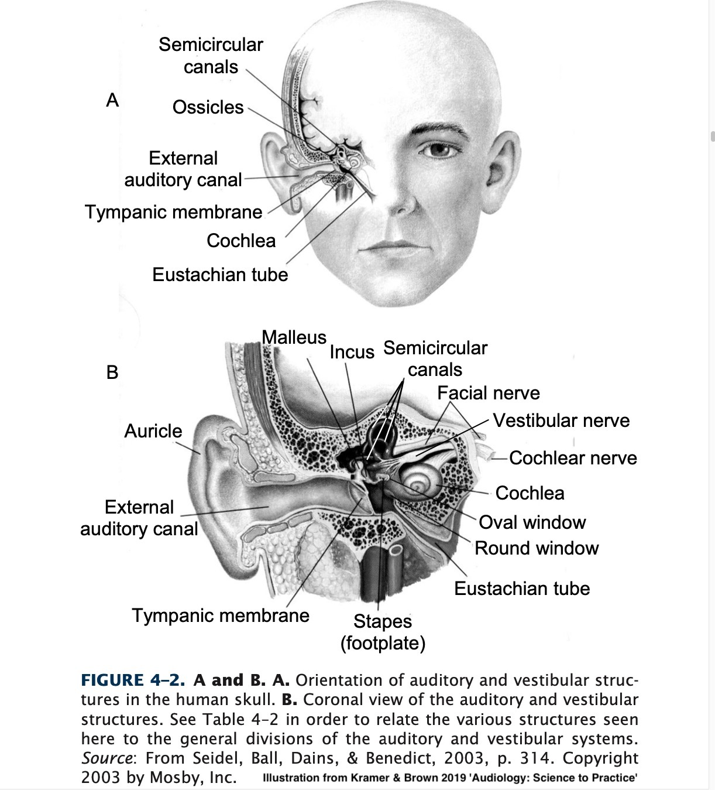
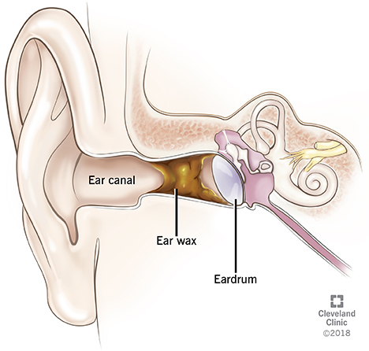
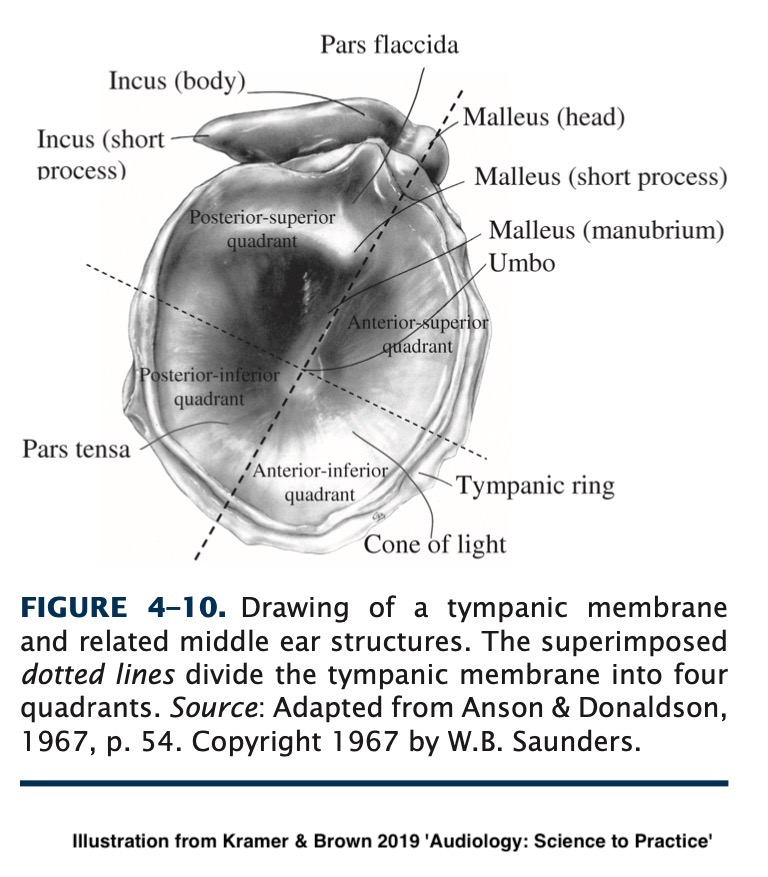
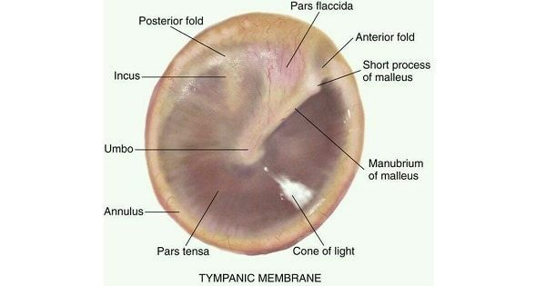

# The Anatomy of the Outer Ear Will Styler - LIGN 113 --- ### Today's Plan - Questions about the Reading? - 'Transduction' - Overview of the Structures of the Ear - The Pinna - The Ear Canal - The Tympanic Membrane --- ## Any questions? --- ## 'Transduction' --- ### We're going to talk a lot about 'transduction' - *Transduction is a process by which one kind of signal, energy, or stimulus is converted into another form* --- ### We are surrounded by transducers - Microphones - Speakers - Seismographs - Thermometers - What else? --- ### The auditory system is all about transduction! - Transducing air pressure to mechanical pressure - Transducing mechanical movements to neural signals - Transducing neural signals into a model of the world - **Thinking about transduction will help you all quarter!** --- ### No transduction is perfect! - Energy is often lost - The signal is often *distorted* subtly - Sometimes parts of the signal are discarded entirely - "What is being lost?" is another valuable question to ask! --- ## The Structures of the Ear --- ### Three 'Zones' that most folks discuss - The 'Outer Ear' - The 'Middle Ear' - The 'Inner Ear' ---  --- <img class="r-stretch" src="hearing/outerear.jpg"> --- ### The Outer Ear - The Pinna, Ear Canal, and Typmpanic Membrane - Offers protection of the sensitive bits - Provides Amplification - Helps with localization --- <img class="r-stretch" src="hearing/outerear.jpg"> --- ### The Middle Ear - The Ossicular Chain, the Eustachian tube, and the surrounding space - Provides transduction from air to mechanical movement - Provides pressure regulation - Provides limited protection via the Acoustic Reflexes - ... and dislocateable bones --- <img class="r-stretch" src="hearing/outerear.jpg"> --- ### Functions of the Inner Ear - The Semicircular Canals, Cochlea, and Auditory Nerve - Provides perception of orientation and motion - Via the Vestibular System - Provides transduction from physical vibration to neural signals - Via the Cochlea and auditory nerve --- <img class="r-stretch" src="hearing/outerear.jpg"> --- ### We're going to go through the system in that order - Outer, middle, inner - ... and today, we're starting with the outer ear! --- # The Outer Ear --- ## The Pinna <img class="r-stretch" src="hearing/outerear_pinna.jpg"> --- ### The Pinna - Also called the Auricle - The external apparatus of the ear - Serves to protect the ear canal - Helps with localization of sound - Helps amplify sounds --- ### What does the Pinna protect against? <img class="r-stretch" src="hearing/outerear_pinna.jpg"> --- ### Ear canal protection - Against pressure seals - Against rain and water - Against wind --- ### How does the Pinna direct hearing? --- ### Localization of Sound --- ### The human pinna is fixed <img class="r-stretch" src="hearing/outerear_pinna.jpg"> --- ### Not all animals have a fixed pinna --- ### Not all animals have a fixed pinna --- ### The Pinna still provides some location cues - Front vs. Back - Up vs down <img class="r-stretch" src="hearing/outerear_pinna.jpg"> --- ### Pinna Amplification <img class="r-stretch" src="hearing/outerear.jpg"> --- --- ### The Pinna Amplifies sounds! - Amplification is strongest around 3000Hz - Where lots of speech is! - This is our first *distortion* step in hearing --- ### Some people pour rum and pineapple juice into the outer ear - ... to make a pinna colada - 😂😂😂😂😂 --- ### Once sound leaves the pinna, it goes into... --- ## The Ear Canal <img class="r-stretch" src="hearing/outerear.jpg"> --- ### The Ear Canal - A long tube for air to travel into the skull - Contains hairs, cerumen glands - Around 1" long, 0.25" in diameter in adults --- ### Ear Canal Subareas - Cartilaginous portion contains hairs and cerumen glands - Bony portion has none --- ### Ear Canal (with surrounding anatomy) <img class="r-stretch" src="hearing/outerear_hairs.jpg"> --- ### The Ear Canal is mostly protective <img class="r-stretch" src="hearing/outerear.jpg"> --- ### Cerumen (Earwax) - Cerumen lubricates, cleans, and protects the ear canal - Also helps prevent some infections and fungal growth - Naturally 'pumped' out of the ear with chewing and jaw movement - Let's check that! - Should exit the ear naturally at the pinna --- ### Cerumen types - People produce two different types of cerumen! - The ABCC11 gene controls your earwax type - Wet wax (AA Genotype) is common in European and African folks - Apparently also linked to body odor issues... - Dry-Flaky wax (GA/GG) is common in East Asian and Indigenous American folks - Comes out more readily --- ### Cerumen Impaction  --- ### Cerumen impaction is a common cause of hearing loss - ... and it's really easy to treat! - There are even at-home kits - **Do not stick things into your ears to 'dig it out'** --- ### Ear Candling is... not supported by science - Not enough suction - Nothing is removed - There are *no* proven health benefits - At best, you're getting ripped off --- ### Cerumen ≠ Saruman --- (Although, actually, both can be removed by flushing the area with water...) --- <img class="r-stretch" src="hearing/outerear.jpg"> --- ### The Tympanic Membrane ('eardrum')  --- ### The Tympanic Membrane - Blocks water and debris from entering the middle ear - Partially transparent, made up of layers - Captures sound vibrations, transmitting them into the *ossicular chain* ---  --- ### From here out, 'TM' unmarked means 'Tympanic Membrane' - ... so don't (tym)panic --- ### The Tympanic Membrane forms a seal! <img class="r-stretch" src="hearing/outerear.jpg"> --- ### Why is this seal a Good Idea? - Stops things from going into the middle ear - Allows water to fill the outer ear without filling the middle ear - Drums with holes have problems... - One other issue we'll discuss later! --- ### The seal is not *required* for hearing - People can still hear with holes or perforations - Causes some troubles, but can be done therapeutically - It can be rebuilt! - ... but generally, you want that seal! --- ### The TM captures sound! - It moves with air pressure variations - ... and transduces them into bone movement - More on those bones next time! --- ### So that's the Outer Ear <img class="r-stretch" src="hearing/outerear.jpg"> --- ### Wrapping Up - The Auditory system is all about *transduction* - The Ear is divided into Outer, Middle, and Inner areas - Eareas? - The Outer Ear has the Pinna, Ear Canal, and TM - ... and combined, they protect, amplify and transmit! --- ### Next time, we'll journey beyond the Tympanic Membrane - ... and into... --- ## The Middle Ear! --- <huge>Thank you!</huge>